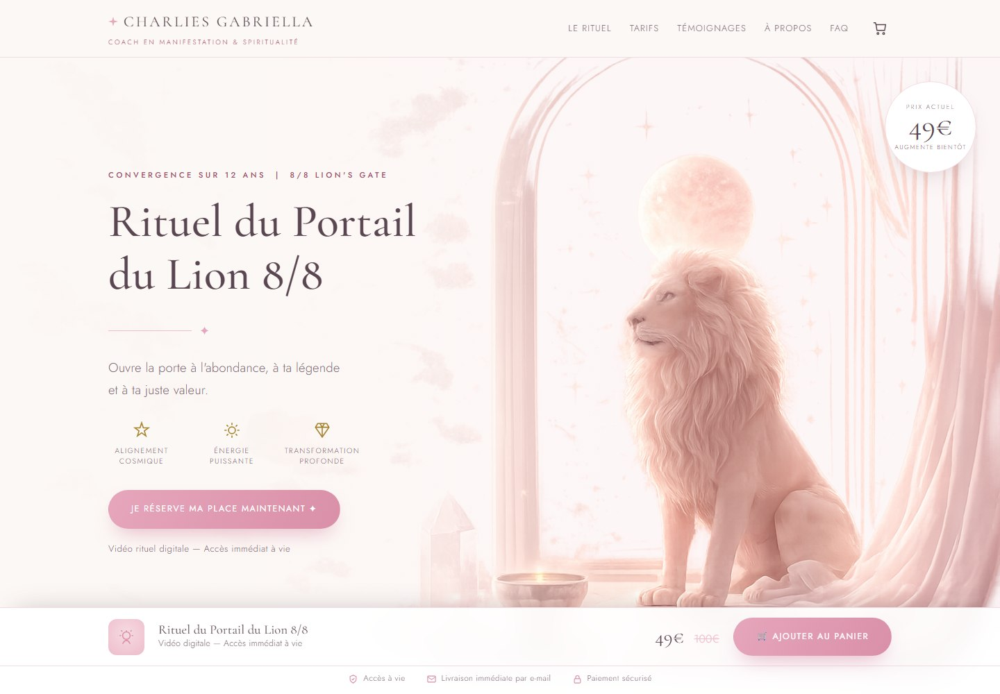

Étude de cas
Charlies Gabriella — Rituel du Portail du Lion
Une page de vente pour un lancement daté : une offre, une échéance, un tarif qui monte par paliers.
Voir le site en ligneLe besoin
Charlies Gabriella accompagne des femmes en manifestation et vend ses rituels sous forme de vidéos guidées. Pour l'ouverture du Portail du Lion, il fallait une page capable de porter un lancement à date fixe : installer un univers, rendre l'échéance lisible, et amener au paiement sans détour.
La réponse
Une page unique, codée à la main, sans CMS ni extension. Le premier écran pose l'univers — illustration, sérif, palette poudrée — avant même de parler de prix. L'urgence est portée par la structure de l'offre plutôt que par le ton : les quatre paliers tarifaires sont affichés côte à côte, celui en cours est signalé, et le compte à rebours dit simplement ce qu'il reste.
Ce que contient la page
- Un premier écran qui installe l'univers de la marque
- Quatre paliers de prix, avec l'étape en cours mise en évidence
- Un compte à rebours relié à la fin de l'offre
- Les témoignages clientes et la présentation de la coach
- Une barre d'achat permanente, visible à tout moment
- Un paiement Stripe en un clic, puis livraison du rituel par e-mail
Le choix technique
Le site est entièrement statique : pas de base de données, aucune extension à maintenir, aucun abonnement mensuel. L'affichage est immédiat, l'hébergement coûte presque rien, et la page reste en ligne entre deux lancements sans demander la moindre maintenance.